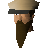

Zoo keeper

| Config name | zoo_keeper |
| NPC id | 28 |
| Combat level | hidden |
| Hitpoints | 20 |
| Attack / Strength / Defence | 10 / 10 / 10 |
| Options | Talk-to |
| Wander range | 5 tiles from spawn |
| Max range | 7 tiles from spawn |
| Area folder | area_ardougne_east |
| Defined in | scripts/areas/area_ardougne_east/configs/ardougne_east.npc |
Zoo keeper
Enjoys locking up animals in small pens.
Show all 3 spawns on the world map → Open in knowledge graph →
Drops
No drops recorded.
Locations
| Area | Coordinates | Level | Count | Map |
|---|---|---|---|---|
| Zoo | 2603, 3284 | 0 | 1 | view |
| Zoo | 2611, 3269 | 0 | 1 | view |
| Zoo | 2619, 3279 | 0 | 1 | view |
Dialogue
Zoo keeperBefore I help you, can you do something for me?
PlayerSure.
Zoo keeperI need to know how many animals we have now.
PlayerHi!
Zoo keeperWelcome to the Ardougne Zoo! How can I help you?
PlayerDo you have any quests for me?
Zoo keeperNot at the moment. The explorers that come back from far away lands tell such amazing tales. Make sure you keep eyes and ears open as you may find new places to explore!
PlayerOoh, I will!
PlayerWhere did you get the animals from?
Zoo keeperWe get them from all over the place! The most exotic creatures have been brought back by explorers and sold to us.
PlayerWhere on RuneScape did you get that scary looking Cyclops?!
Zoo keeperYes he is scary looking!
Zoo keeperHe's from a very far away land, we couldn't find out more as the explorer who brought him back died shortly afterwards!
Referenced in scripts
scripts/areas/area_ardougne_east/scripts/zoo_keeper.rs2